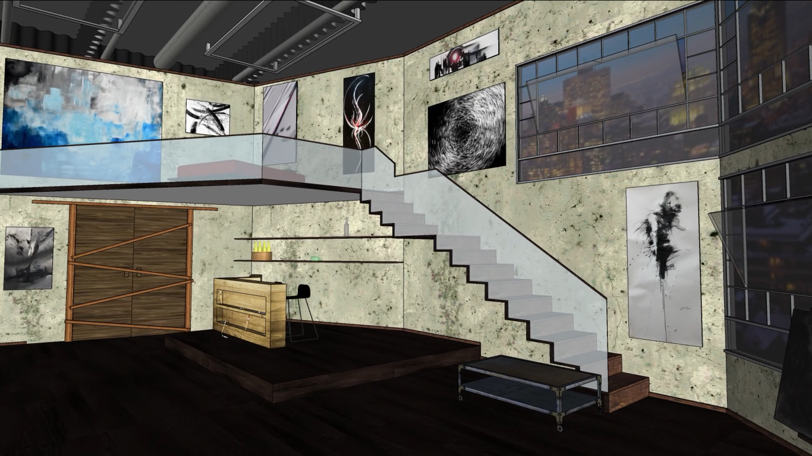

Présentation
Je m’appelle Jade Apestiguy, j’ai 22 ans et je viens de Québec. J’ai un background en art visuel et en arts de la scène. À l’hiver 2020, j’ai fini un BAC à l’UQAM en Art Dramatique, option Scénographie. Avec les productions finales, je me suis spécialisée en conception décor et en conception vidéo. En termes d’expérience web, j’ai appris au cégep à faire un site web avec Dreamweaver. Ça remonte il y a quelques années, donc je ne me souviens pas de tout. Toutefois, je suis capable de me débrouiller avec les bases que j’ai apprises, surtout pour ce qui est des sites statiques. Sinon, je m’intéresse à tout ce qui sort un peu plus de l’ordinaire.
Projet modélisation 3D (vue de face)

Projet modélisation 3D (vue de l'intérieur)
Conception décor 2019
Conception décor 2019
Réflexion sur une oeuvre
Une œuvre web qui m’a interpellé est de loin celle de jodi.org. Tout d’abord, ce que j’aime de cette œuvre est l’immensité du site et la création de faux « glitch ». En explorant l’œuvre pour la première fois, je pouvais y rester pendant plusieurs minutes, car le tout est captivant. En recherchant un peu sur l’œuvre, l’un des buts est de faire croire à un problème informatique avec la machine de l’utilisateur. Évidemment, le tout a été pensé pour ne pas endommager la machine. En bout de ligne, le tout mène à réfléchir sur l’utilisation que nous faisons d’internet et à la fragilité de celui-ci.